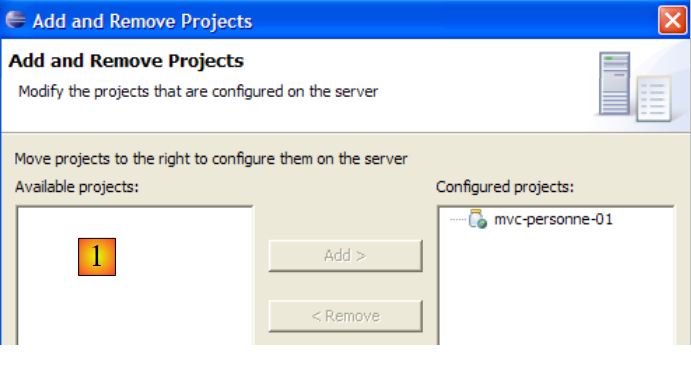
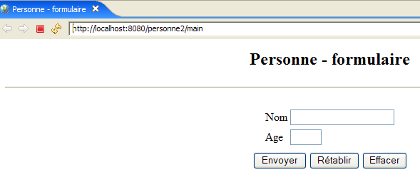

6. MVC Web Application [person] – Version 2
We will now introduce variants of the previous [/person1] application, which we will call [/person2, /person3, ...]. These variants do not alter the application’s original architecture, which remains as follows:

For these variants, we will keep our explanations brief. We will only present the changes made compared to the previous version.
6.1. Introduction
We will now add session management to our application. Let’s review the following points:
- The HTTP client-server dialogue is a series of request-response sequences that are independent of one another
- the session serves as a memory buffer between different request-response sequences from the same user. If there are N users, there are N sessions.
The following screen sequence shows what is now desired in the application’s operation:
Exchange #1
 |  |
The new feature is the link back to the form, which has been added to the [errors] view.
Exchange #2
 |  |
In exchange #1, the user provided the values (xx, yy) for the (name, age) pair. If the server became aware of these values during the exchange, it "forgets" them at the end of the exchange. However, we can see that during exchange #2, it is able to display their values again in its response. It is the concept of a session that, in this case, allows the web server to store data throughout successive client-server exchanges. There are other possible solutions to this problem.
During exchange #1, the server will store the (name, age) pair that the client sent it in the session so that it can display it during exchange #2.
Here is another example of implementing a session between two exchanges:
Exchange #1
 |  |
The new feature is the link back to the form, which has been added to the response page.
Exchange #2
 |  |
6.2. The Eclipse Project
To create the Eclipse project [mvc-personne-02] for the web application [/personne2], we will duplicate the Eclipse project [mvc-personne-01] to reuse the existing code. To do this, follow these steps:
[Right-click on the mvc-personne-01 project -> Copy]:

then [right-click in Package Explorer -> Paste]:
 |  - enter the name of the new project in [1] and the name of an existing but empty folder in [2] |
The [mvc-personne-02] project is then created:

For now, it is identical to the [mvc-personne-01] project. We will need to make a few manual changes before we can use it. Go to the [Servers] view and try to add this new application to those managed by Tomcat:
 |  |
We can see that in [1], the new project [mvc-personne-02] is not recognized by Tomcat. For Tomcat to recognize it, a configuration file for the [mvc-personne-02] project must be modified. Use the [File / Open File] option to open the file [<mvc-personne-02>/.settings/.component]:
<?xml version="1.0" encoding="UTF-8"?>
<project-modules id="moduleCoreId">
<wb-module deploy-name="mvc-personne-01">
<wb-resource deploy-path="/" source-path="/WebContent"/>
<wb-resource deploy-path="/WEB-INF/classes" source-path="/src"/>
<property name="java-output-path" value="/build/classes/"/>
<property name="context-root" value="person1"/>
</wb-module>
</project-modules>
Line 3 specifies the name of the web module to be deployed within Tomcat. Here, this name is the same as that of the [mvc-personne-01] project. We change it to [mvc-personne-02]:
<wb-module deploy-name="mvc-personne-02">
Additionally, we can take this opportunity to modify, on line 7, the name of the application context [mvc-personne-02], which conflicts with that of the project [mvc-personne-01]:
<property name="context-root" value="personne2"/>
This second change could have been made directly within Eclipse. However, I didn’t see how to make the first one without going through the configuration file.
Once this is done, we save the new [.content] file, then exit and restart Eclipse so that the changes take effect.
Once Eclipse has restarted, let’s try the operation that failed previously:
|  |
This time, the [mvc-personne-02] project is recognized. We add it to the projects configured to run on Tomcat:

6.3. Configuring the [personne2] web application
The web.xml file for the /personne2 application is as follows:
<?xml version="1.0" encoding="UTF-8"?>
<web-app id="WebApp_ID" version="2.4"
xmlns="http://java.sun.com/xml/ns/j2ee"
xmlns:xsi="http://www.w3.org/2001/XMLSchema-instance"
xsi:schemaLocation="http://java.sun.com/xml/ns/j2ee http://java.sun.com/xml/ns/j2ee/web-app_2_4.xsd">
<display-name>mvc-person-02</display-name>
<!-- ServletPerson -->
<servlet>
<servlet-name>person</servlet-name>
<servlet-class>
istia.st.servlets.personne.PersonServlet
</servlet-class>
<init-param>
<param-name>responseUrl</param-name>
<param-value>
/WEB-INF/views/response.jsp
</param-value>
</init-param>
<init-param>
<param-name>errorUrl</param-name>
<param-value>
/WEB-INF/views/errors.jsp
</param-value>
</init-param>
<init-param>
<param-name>form-url</param-name>
<param-value>
/WEB-INF/views/form.jsp
</param-value>
</init-param>
<init-param>
<param-name>urlController</param-name>
<param-value>
main
</param-value>
</init-param>
<init-param>
<param-name>formBackLink</param-name>
<param-value>
Return to form
</param-value>
</init-param>
</servlet>
<!-- ServletPersonne mapping -->
<servlet-mapping>
<servlet-name>person</servlet-name>
<url-pattern>/main</url-pattern>
</servlet-mapping>
<!-- welcome files -->
<welcome-file-list>
<welcome-file>index.jsp</welcome-file>
</welcome-file-list>
</web-app>
This file is identical to the one in the previous version, except that it declares two new initialization parameters:
- line 6: the display name of the web application has changed to [mvc-personne-02]
- lines 31–36: define the configuration parameter named [urlController], which is the [main] URL that leads to the [ServletPersonne] servlet
- lines 37–42: define a configuration parameter named [lienRetourFormulaire], which is the text of the link back to the form on the JSP pages [erreurs.jsp] and [reponse.jsp].
The home page [index.jsp] changes:
<%@ page language="java" contentType="text/html; charset=ISO-8859-1"
pageEncoding="ISO-8859-1"%>
<!DOCTYPE HTML PUBLIC "-//W3C//DTD HTML 4.01 Transitional//EN">
<%
response.sendRedirect("/person2/main");
%>
- Line 5: The [index.jsp] page redirects the client to the URL of the [ServletPersonne] controller in the [/personne2] application.
6.4. The view code
6.4.1. The [form] view
This view is identical to that of the previous version:

It is generated by the following JSP page [formulaire.jsp]:
<%@ page language="java" contentType="text/html; charset=ISO-8859-1"
pageEncoding="ISO-8859-1"%>
<!DOCTYPE HTML PUBLIC "-//W3C//DTD HTML 4.01 Transitional//EN">
<%
// retrieve data from the model
String name = (String) session.getAttribute("name");
String age = (String) session.getAttribute("age");
String urlAction = (String) request.getAttribute("urlAction");
%>
<html>
<head>
<title>Person - form</title>
</head>
<body>
<center>
<h2>Person - form</h2>
<hr>
<form action="<%=urlAction%>" method="post">
<table>
<tr>
<td>Name</td>
<td><input name="txtName" value="<%= name %>" type="text" size="20"></td>
</tr>
<tr>
<td>Age</td>
<td><input name="txtAge" value="<%= age %>" type="text" size="3"></td>
</tr>
<tr>
</table>
<table>
<tr>
<td><input type="submit" value="Submit"></td>
<td><input type="reset" value="Reset"></td>
<td><input type="button" value="Clear"></td>
</tr>
</table>
<input type="hidden" name="action" value="validationFormulaire">
</form>
</center>
</body>
</html>
What's new:
- Line 19: The form now has an [action] attribute whose value is the URL to which the browser will post the form values when the user clicks the [Submit] button. The [urlAction] variable will have the value action="main". The [form] view is displayed after the user performs the following actions:
- initial request: GET /person2/main
- click on the [Back to form] link: GET /person2/main?action=retourFormulaire
Since the [action] attribute does not specify an absolute URL (starting with /) but a relative URL (not starting with /), the browser will use the first part of the URL of the currently displayed page [/person2] and append the relative URL to it. The POST URL will therefore be [/person2/main], which is the controller’s URL. This POST request will be accompanied by the parameters [txtName, txtAge, action] from lines 23, 27, and 38.
- Line 8: We retrieve the value of the [urlAction] element from the model. It is retrieved from the current request’s attributes. It will be used on line 19.
- Lines 6–7: We retrieve the values of the [name, age] elements from the model. They are retrieved from the session attributes rather than the request attributes, as in the previous version. This is to accommodate the [GET /person2/main?action=returnToForm] request from the link in the [response] and [errors] views. Before displaying these two views, the controller places the data entered in the form into the session, which allows it to retrieve it when the user clicks the [Return to form] link in the [response] and [errors] views.
6.4.2. The [response] view
This view displays the values entered in the form when they are valid:
 | |
Compared to the previous version, the new feature is the [Back to Form] link. The view is generated by the following JSP page [response.jsp]:
<%@ page language="java" contentType="text/html; charset=ISO-8859-1"
pageEncoding="ISO-8859-1"%>
<!DOCTYPE HTML PUBLIC "-//W3C//DTD HTML 4.01 Transitional//EN">
<%
// retrieve data from the model
String name = (String) request.getAttribute("name");
String age = (String) request.getAttribute("age");
String formSubmitLink = (String)request.getAttribute("formSubmitLink");
%>
<html>
<head>
<title>Person</title>
</head>
<body>
<h2>Person - response</h2>
<hr>
<table>
<tr>
<td>Name</td>
<td><%= name %>
</tr>
<tr>
<td>Age</td>
<td><%= age %>
</tr>
</table>
<br>
<a href="?action=retourFormulaire"><%= formBacklink %></a>
</body>
</html>
- Line 31: the link back to the form. This link has two components:
- the target [href="?action=retourFormulaire"]. The [response] view is displayed after the form [formulaire.jsp] is submitted via POST to the URL [/personne2/main]. It is therefore this latter URL that is displayed in the browser when the [response] view is displayed. Clicking the [Return to Form] link will then trigger a GET request from the browser to the URL specified by the link’s [href] attribute, in this case "?action=retourFormulaire". If no URL is specified in [href], the browser will use the URL of the currently displayed view, i.e., [/personne2/main]. Ultimately, clicking the [Back to form] link will trigger a GET request from the browser to the URL [/person2/main?action=retourFormulaire], i.e., the application controller’s URL accompanied by the [action] parameter to tell it what to do.
- the link text. This will be part of the template sent to the page by the controller and retrieved on line 10.
6.4.3. The [errors] view
This view displays input errors in the form:
| |
Compared to the previous version, the new feature is the [Return to form] link. The view is generated by the following JSP page [errors.jsp]:
<%@ page language="java" contentType="text/html; charset=ISO-8859-1"
pageEncoding="ISO-8859-1"%>
<!DOCTYPE HTML PUBLIC "-//W3C//DTD HTML 4.01 Transitional//EN">
<%@ page import="java.util.ArrayList" %>
<%
// retrieve data from the model
ArrayList errors = (ArrayList) request.getAttribute("errors");
String formSubmitLink = (String)request.getAttribute("formSubmitLink");
%>
<html>
<head>
<title>Person</title>
</head>
<body>
<h2>The following errors occurred</h2>
<ul>
<%
for (int i = 0; i < errors.size(); i++) {
out.println("<li>" + (String) errors.get(i) + "</li>\n");
}//for
%>
</ul>
<br>
<a href="?action=retourFormulaire"><%= formSubmitLink %></a>
</body>
</html>
- Line 26: the link back to the form. This link is identical to the one in the [response] view. The reader is encouraged to review the explanations provided for that view if necessary.
6.5. Testing the Views
To test the previous views, we duplicate their JSP pages in the /WebContent/JSP folder of the Eclipse project:

Then, in the JSP folder, the pages are modified as follows:
[form.jsp]:
...
<%
// -- test: we create the page template
session.setAttribute("name", "tintin");
session.setAttribute("age", "30");
request.setAttribute("urlAction", "main");
%>
<%
// retrieve data from the model
String name = (String)session.getAttribute("name");
String age = (String)session.getAttribute("age");
String urlAction = (String) request.getAttribute("urlAction");
%>
Lines 4–5 were added to create the model required by the page in lines 11–13.
[response.jsp]:
<%
// -- test: we create the page template
request.setAttribute("name", "milou");
request.setAttribute("age","10");
request.setAttribute("formBackLink", "Back to form");
%>
<%
// retrieve data from the form
String name = (String)request.getAttribute("name");
String age = (String)request.getAttribute("age");
String formSubmitLink = (String)request.getAttribute("formSubmitLink");
%>
Lines 4–6 were added to create the template required by the page in lines 11–13.
[errors.jsp]:
<%
// -- test: create the page template
ArrayList<String> errors1 = new ArrayList<String>();
errors1.add("error1");
errors1.add("error2");
request.setAttribute("errors", errors1);
request.setAttribute("formBackLink", "Back to form");
%>
<%
// retrieve data from the model
ArrayList errors = (ArrayList) request.getAttribute("errors");
String formBackLink = (String)request.getAttribute("formBackLink");
%>
Lines 4–8 were added to create the model required by the page in lines 13–14.
Let’s start Tomcat if it isn’t already running, then request the following URLs:
 |  |
 |
We get the expected views.
6.6. The [ServletPersonne] controller
The [ServletPersonne] controller of the [/personne2] web application will handle the following actions:
No. | request | origin | processing |
1 | [GET /person2/hand] | URL entered by the user | - send the empty [form] view |
2 | [POST /person2/hand] with parameters [txtName, txtAge, action] | click on the [Submit] button in the [form] | - check the values of the parameters [txtName, txtAge] - if they are incorrect, send the view [errors(errors)] - if they are correct, send the [response(name,age)] view |
3 | [GET /person2/main? action=returnForm] | click on the [Return to form] of the views response] and [errors]. | - Send the [form] view pre-filled with the latest entered values |
So we have a new action to handle: [GET /person2/main?action=returnForm].
6.6.1. Controller skeleton
The controller skeleton [ServletPersonne] is almost identical to that of the previous version:
What's new:
- line 4: using a session requires importing the [HttpSession] package
- Lines 28–30: The new method [doRetourFormulaire] handles the new action: [GET /personne2/main?action=retourFormulaire].
6.6.2. Initialization of the [init] controller
The [init] method is identical to that of the previous version. It checks the [web.xml] file for the elements declared in the [parameters] array:
- Line 5: The parameters [controllerUrl] (controller URL) and [formBackLink] (link text for the [response] and [errors] views) have been added.
6.6.3. The [doGet] method
The [doGet] method must handle the [GET /person2/main?action=formSubmit] action, which did not exist previously:
- lines 6–14: we check that the list of initialization errors is empty. If it is not, we display the [errors(initializationErrors)] view, which will report the error(s).
To understand this code, you need to recall the [errors] view template:
<%
// retrieve data from the model
ArrayList errors = (ArrayList) request.getAttribute("errors");
String formReturnLink = (String) request.getAttribute("formReturnLink");
%>
The [errors] view expects a key element named "errors" in the request. The controller creates this element on line 8. It also expects a key element named "formSubmitLink". The controller creates this element on line 9. Here, the link text will be empty. Therefore, there will be no link in the [errors] view that is sent. Indeed, if there were errors during application initialization, the application must be reconfigured. There is no need to offer the user the option to continue the application via a link.
- Lines 34–37: processing the new action [GET /person2/main?action=returnForm]
6.6.4. The [doInit] method
This method handles request #1 [GET /person2/main]. For this request, it must return the empty [form(name,age)] view. Its code is as follows:
- Line 4: The current session is retrieved if it exists; otherwise, it is created (getSession parameter set to true).
- Lines 9-10: The [form] view is displayed. Recall the model expected by this view:
<%
// retrieve data from the model
String name = (String) session.getAttribute("name");
String age = (String) session.getAttribute("age");
String urlAction = (String) request.getAttribute("urlAction");
%>
- Lines 6-7: The [name, age] elements of the [form] view model are initialized with empty strings and placed in the session because that is where the view expects them.
- Line 8: The [urlAction] element of the model is initialized with the value of the [urlController] parameter from the [web.xml] file and placed in the request.
6.6.5. The [doValidationFormulaire] method
This method processes request #2 [POST /person2/main], in which the posted parameters are [action, txtName, txtAge]. Its code is as follows:
- Lines 5–6: We retrieve the values of the "txtNom" and "txtAge" parameters from the client's request.
- lines 8–10: These values are stored in the session so they can be retrieved when the user clicks the [Back to form] link on the [response] and [errors] views.
- Lines 12–19: The validity of the values for both parameters is checked.
- lines 21-28: if either parameter is invalid, the [errors(errors,returnToFormLink)] view is displayed. Recall the template for this view:
<%
// retrieve the data from the model
ArrayList errors = (ArrayList) request.getAttribute("errors");
String formReturnLink = (String) request.getAttribute("formReturnLink");
%>
- Lines 30–34: If the two retrieved parameters "txtName" and "txtAge" have valid values, we display the [response(name, age, formSubmitLink)] view. Remember the [response] view template:
<%
// retrieve data from the model
String name = (String)request.getAttribute("name");
String age = (String) request.getAttribute("age");
String formSubmitLink = (String)request.getAttribute("formSubmitLink");
%>
6.6.6. The [doRetourFormulaire] method
This method handles request #3 [GET /person2/main?action=formSubmit]. Its code is as follows:
After this method completes, the [form] view should be displayed, pre-filled with the user's latest entries. Here is the [form] view template:
<%
// retrieve data from the model
String name = (String)session.getAttribute("name");
String age = (String)session.getAttribute("age");
String urlAction = (String)request.getAttribute("urlAction");
%>
The [doRetourFormulaire] method must therefore construct the previous model.
- Line 4: We retrieve the session in which the controller has stored the entered values (name, age).
- line 7: we retrieve the name from the session
- Lines 8–9: If it is not there, we add it with an empty value. This scenario should not occur during normal application operation, as the [returnForm] action always takes place after the [validateForm] action, which occurs after the entered data has been saved to the session. However, a session may expire because it has a limited lifespan, often a few dozen minutes. In this case, line 4 has created a new session in which the name will not be found. We therefore set an empty name in the new session.
- Lines 11–13: We do the same for the age
- If we ignore the issue of the expired session, then lines 3–13 are unnecessary. The [name, age] elements of the model are already in the session. Therefore, there is no need to put them back there.
- Line 15: We set the value of the [urlAction] element in the model
6.7. Tests
Start or restart Tomcat. Request the URL [http://localhost:8080/personne2] and then repeat the tests shown in the example in section 6.1.